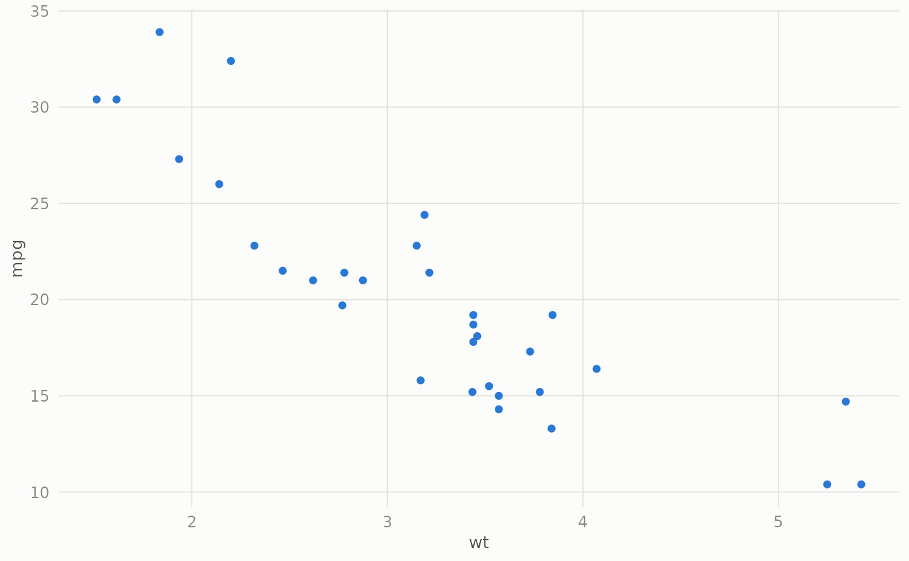

All gRate plots share one design system: a colorblind-validated categorical
palette (assigned in fixed slot order, never cycled), the perceptually
uniform rocket ramp for magnitude (heatmaps) — the same palette seaborn
uses for its heatmaps — a reserved status red for flagged wells, and a
quiet chart chrome: hairline gridlines, muted axis ink, no decoration
louder than the data.
Details
gr_colors exposes the named roles so your own plots can match:
$series (eight categorical hues in slot order), $sequential (nine
steps of the rocket colormap: perceptually uniform and
luminance-monotonic, so equal value differences get equal visual
differences — near-black low through crimson to pale high), $flagged
(status red), $fitted (the fit-line blue), and the ink roles $ink,
$ink2, $muted, $grid, $baseline, $surface, $neutral.
Examples
gr_colors$series[1:3]
#> [1] "#2a78d6" "#eb6834" "#1baf7a"
gr_colors$flagged
#> [1] "#d03b3b"
library(ggplot2)
ggplot(mtcars, aes(wt, mpg)) +
geom_point(colour = gr_colors$series[1]) +
theme_gr()
